Overview#
Alphalens is designed to aid in the analysis of “alpha factors,” data transformations that are used to predict future price movements of financial instruments. Alpha factors take the form of a single value for each asset on each day. The dimension of these values is not necessarily important. We evaluate an alpha factor by considering daily factor values relative to one another.
It is important to note the difference between an alpha factor and a trading algorithm. A trading algorithm uses an alpha factor, or combination of alpha factors to generate trades. Trading algorithms cover execution and risk constraints: the business of turning predictions into profits. Alpha factors, on the other hand, are focused soley on making predictions. This difference in scope lends itself to a difference in the methodologies used to evaluate alpha factors and trading algorithms.
Alphalens does not contain analyses of things like transaction costs, capacity, or portfolio construction. Those interested in more implementation specific analyses are encouaged to check out pyfolio, a library specifically geared towards the evaluation of trading algorithms.
Imports & Settings#
[1]:
import warnings
warnings.filterwarnings('ignore')
[2]:
import pandas as pd
import alphalens
import seaborn as sns
[3]:
%matplotlib inline
sns.set_style('white')
Load & Transform Data#
[4]:
ticker_sector = {
"ACN": 0, "ATVI": 0, "ADBE": 0, "AMD": 0, "AKAM": 0, "ADS": 0, "GOOGL": 0, "GOOG": 0,
"APH": 0, "ADI": 0, "ANSS": 0, "AAPL": 0, "AMAT": 0, "ADSK": 0, "ADP": 0, "AVGO": 0,
"AMG": 1, "AFL": 1, "ALL": 1, "AXP": 1, "AIG": 1, "AMP": 1, "AON": 1, "AJG": 1, "AIZ": 1, "BAC": 1,
"BK": 1, "BBT": 1, "BRK.B": 1, "BLK": 1, "HRB": 1, "BHF": 1, "COF": 1, "CBOE": 1, "SCHW": 1, "CB": 1,
"ABT": 2, "ABBV": 2, "AET": 2, "A": 2, "ALXN": 2, "ALGN": 2, "AGN": 2, "ABC": 2, "AMGN": 2, "ANTM": 2,
"BCR": 2, "BAX": 2, "BDX": 2, "BIIB": 2, "BSX": 2, "BMY": 2, "CAH": 2, "CELG": 2, "CNC": 2, "CERN": 2,
"MMM": 3, "AYI": 3, "ALK": 3, "ALLE": 3, "AAL": 3, "AME": 3, "AOS": 3, "ARNC": 3, "BA": 3, "CHRW": 3,
"CAT": 3, "CTAS": 3, "CSX": 3, "CMI": 3, "DE": 3, "DAL": 3, "DOV": 3, "ETN": 3, "EMR": 3, "EFX": 3,
"AES": 4, "LNT": 4, "AEE": 4, "AEP": 4, "AWK": 4, "CNP": 4, "CMS": 4, "ED": 4, "D": 4, "DTE": 4,
"DUK": 4, "EIX": 4, "ETR": 4, "ES": 4, "EXC": 4, "FE": 4, "NEE": 4, "NI": 4, "NRG": 4, "PCG": 4,
"ARE": 5, "AMT": 5, "AIV": 5, "AVB": 5, "BXP": 5, "CBG": 5, "CCI": 5, "DLR": 5, "DRE": 5,
"EQIX": 5, "EQR": 5, "ESS": 5, "EXR": 5, "FRT": 5, "GGP": 5, "HCP": 5, "HST": 5, "IRM": 5, "KIM": 5,
"APD": 6, "ALB": 6, "AVY": 6, "BLL": 6, "CF": 6, "DWDP": 6, "EMN": 6, "ECL": 6, "FMC": 6, "FCX": 6,
"IP": 6, "IFF": 6, "LYB": 6, "MLM": 6, "MON": 6, "MOS": 6, "NEM": 6, "NUE": 6, "PKG": 6, "PPG": 6,
"T": 7, "CTL": 7, "VZ": 7,
"MO": 8, "ADM": 8, "BF.B": 8, "CPB": 8, "CHD": 8, "CLX": 8, "KO": 8, "CL": 8, "CAG": 8,
"STZ": 8, "COST": 8, "COTY": 8, "CVS": 8, "DPS": 8, "EL": 8, "GIS": 8, "HSY": 8, "HRL": 8,
"AAP": 9, "AMZN": 9, "APTV": 9, "AZO": 9, "BBY": 9, "BWA": 9, "KMX": 9, "CCL": 9,
"APC": 10, "ANDV": 10, "APA": 10, "BHGE": 10, "COG": 10, "CHK": 10, "CVX": 10, "XEC": 10, "CXO": 10,
"COP": 10, "DVN": 10, "EOG": 10, "EQT": 10, "XOM": 10, "HAL": 10, "HP": 10, "HES": 10, "KMI": 10
}
See yfinance for details.
[7]:
import yfinance as yf
import pandas_datareader.data as web
tickers = list(ticker_sector.keys())
df = yf.download(tickers, start="2014-12-01", end="2017-01-01")
df.index = pd.to_datetime(df.index, utc=True)
print(df.head())
[* 3% ] 5 of 182 completed$MON: possibly delisted; no timezone found
$AGN: possibly delisted; no timezone found
[* 3% ] 6 of 182 completed$HES: possibly delisted; no timezone found
[**** 8% ] 15 of 182 completed$ATVI: possibly delisted; no timezone found
[****** 12% ] 22 of 182 completed$ANSS: possibly delisted; no timezone found
$XEC: possibly delisted; no timezone found
[******** 16% ] 30 of 182 completed$CERN: possibly delisted; no timezone found
[********* 19% ] 34 of 182 completed$CBG: possibly delisted; no price data found (1d 2014-12-01 -> 2017-01-01)
[********* 19% ] 35 of 182 completed$DWDP: possibly delisted; no timezone found
[************* 27% ] 50 of 182 completed$BHGE: possibly delisted; no timezone found
[************** 30% ] 54 of 182 completed$BHF: possibly delisted; no price data found (1d 2014-12-01 -> 2017-01-01) (Yahoo error = "Data doesn't exist for startDate = 1417410000, endDate = 1483246800")
[***************** 36% ] 65 of 182 completed$BRK.B: possibly delisted; no timezone found
[***************** 36% ] 66 of 182 completed$CHK: possibly delisted; no timezone found
[******************* 40% ] 73 of 182 completed$COG: possibly delisted; no timezone found
$CXO: possibly delisted; no timezone found
[**********************51% ] 92 of 182 completed$ADS: possibly delisted; no timezone found
[**********************51% ] 93 of 182 completed$HCP: possibly delisted; no timezone found
[**********************54%* ] 99 of 182 completed$BK: possibly delisted; no timezone found
[**********************57%** ] 103 of 182 completed$ABC: possibly delisted; no timezone found
[**********************57%** ] 103 of 182 completed$ARNC: possibly delisted; no timezone found
[**********************64%****** ] 116 of 182 completed$ALXN: possibly delisted; no timezone found
[**********************66%******* ] 120 of 182 completed$CELG: possibly delisted; no timezone found
[**********************66%******* ] 121 of 182 completed$BLL: possibly delisted; no timezone found
[**********************71%********* ] 129 of 182 completed$CTL: possibly delisted; no timezone found
[**********************76%*********** ] 138 of 182 completed$BCR: possibly delisted; no price data found (1d 2014-12-01 -> 2017-01-01)
[**********************86%**************** ] 156 of 182 completed$APC: possibly delisted; no price data found (1d 2014-12-01 -> 2017-01-01) (Yahoo error = "Data doesn't exist for startDate = 1417410000, endDate = 1483246800")
[**********************86%**************** ] 157 of 182 completed$BF.B: possibly delisted; no price data found (1d 2014-12-01 -> 2017-01-01)
[**********************90%****************** ] 163 of 182 completed$GGP: possibly delisted; no price data found (1d 2014-12-01 -> 2017-01-01)
[**********************90%****************** ] 164 of 182 completed$ANTM: possibly delisted; no timezone found
[**********************91%******************* ] 166 of 182 completed$DPS: possibly delisted; no price data found (1d 2014-12-01 -> 2017-01-01)
[**********************98%********************** ] 179 of 182 completed$DRE: possibly delisted; no timezone found
[*********************100%***********************] 182 of 182 completed
31 Failed downloads:
['MON', 'AGN', 'HES', 'ATVI', 'ANSS', 'XEC', 'CERN', 'DWDP', 'BHGE', 'BRK.B', 'CHK', 'COG', 'CXO', 'ADS', 'HCP', 'BK', 'ABC', 'ARNC', 'ALXN', 'CELG', 'BLL', 'CTL', 'ANTM', 'DRE']: possibly delisted; no timezone found
['CBG', 'BCR', 'BF.B', 'GGP', 'DPS']: possibly delisted; no price data found (1d 2014-12-01 -> 2017-01-01)
['BHF', 'APC']: possibly delisted; no price data found (1d 2014-12-01 -> 2017-01-01) (Yahoo error = "Data doesn't exist for startDate = 1417410000, endDate = 1483246800")
Price Adj Close \
Ticker ABC ADS AGN ALXN ANSS ANTM APC ARNC ATVI BCR
Date
2014-12-01 00:00:00+00:00 NaN NaN NaN NaN NaN NaN NaN NaN NaN NaN
2014-12-02 00:00:00+00:00 NaN NaN NaN NaN NaN NaN NaN NaN NaN NaN
2014-12-03 00:00:00+00:00 NaN NaN NaN NaN NaN NaN NaN NaN NaN NaN
2014-12-04 00:00:00+00:00 NaN NaN NaN NaN NaN NaN NaN NaN NaN NaN
2014-12-05 00:00:00+00:00 NaN NaN NaN NaN NaN NaN NaN NaN NaN NaN
Price ... Volume \
Ticker ... NUE PCG PKG PPG SCHW
Date ...
2014-12-01 00:00:00+00:00 ... 1545000 3774500 509600 3195800 8977400
2014-12-02 00:00:00+00:00 ... 1437500 4811900 585500 1815200 4987900
2014-12-03 00:00:00+00:00 ... 1828000 3795700 1003000 1591600 8952200
2014-12-04 00:00:00+00:00 ... 1452000 3302100 1786400 2052800 4295600
2014-12-05 00:00:00+00:00 ... 1944300 1744300 961900 1527800 12591300
Price
Ticker STZ T VZ XEC XOM
Date
2014-12-01 00:00:00+00:00 923600 26415124 11949100 NaN 27584200
2014-12-02 00:00:00+00:00 847000 48895982 18141000 NaN 20885300
2014-12-03 00:00:00+00:00 972800 40703335 22429200 NaN 16220400
2014-12-04 00:00:00+00:00 655700 30441540 14606900 NaN 12868600
2014-12-05 00:00:00+00:00 708000 25014862 15512200 NaN 11831900
[5 rows x 941 columns]
[8]:
df = df.stack()
df.index.names = ['date', 'asset']
df.info()
Price Adj Close Close High \
date asset
2014-12-01 00:00:00+00:00 A NaN 37.744011 38.778590
AAL NaN 45.366467 46.872997
AAP NaN 127.388123 127.994441
AAPL NaN 25.462753 26.387706
ABBV NaN 43.128693 43.372075
Price Low Open Volume
date asset
2014-12-01 00:00:00+00:00 A 37.734937 38.742288 4411200.0
AAL 44.873764 46.427669 15151400.0
AAP 126.573917 126.816445 1220300.0
AAPL 24.621887 26.290342 335256000.0
ABBV 42.953957 43.109972 4885100.0
<class 'pandas.core.frame.DataFrame'>
MultiIndex: 79426 entries, (Timestamp('2014-12-01 00:00:00+0000', tz='UTC'), 'A') to (Timestamp('2016-12-30 00:00:00+0000', tz='UTC'), 'XOM')
Data columns (total 6 columns):
# Column Non-Null Count Dtype
--- ------ -------------- -----
0 Adj Close 0 non-null float64
1 Close 79426 non-null float64
2 High 79426 non-null float64
3 Low 79426 non-null float64
4 Open 79426 non-null float64
5 Volume 79426 non-null float64
dtypes: float64(6)
memory usage: 4.0+ MB
Compute Factor#
For demonstration purposes we will create a predictive factor. To cheat we will look at future prices to make sure we’ll rank high stoks that will perform well and vice versa.
[9]:
lookahead_bias_days = 5
predictive_factor = df.loc[:, 'Open'].unstack('asset')
predictive_factor = predictive_factor.pct_change(lookahead_bias_days)
# introduce look-ahead bias and make the factor predictive
predictive_factor = predictive_factor.shift(-lookahead_bias_days)
predictive_factor = predictive_factor.stack()
[11]:
predictive_factor.head()
[11]:
date asset
2014-12-01 00:00:00+00:00 A -0.010775
AAL 0.029388
AAP 0.057919
AAPL -0.039643
ABBV 0.010567
dtype: float64
Get pricing info#
The pricing data passed to alphalens should contain the entry price for the assets so it must reflect the next available price after a factor value was observed at a given timestamp. Those prices must not be used in the calculation of the factor values for that time. Always double check to ensure you are not introducing lookahead bias to your study.
The pricing data must also contain the exit price for the assets, for period 1 the price at the next timestamp will be used, for period 2 the price after 2 timestats will be used and so on.
There are no restrinctions/assumptions on the time frequencies a factor should be computed at and neither on the specific time a factor should be traded (trading at the open vs trading at the close vs intraday trading), it is only required that factor and price DataFrames are properly aligned given the rules above.
In our example, before the trading starts every day, we observe yesterday factor values. The price we pass to alphalens is the next available price after that factor observation: the daily open price that will be used as assets entry price. Also, we are not adding additional prices so the assets exit price will be the following days open prices (how many days depends on ‘periods’ argument). The retuns computed by Alphalens will therefore based on assets open prices.
[13]:
pricing = df.loc[:, 'Open'].iloc[1:].unstack('asset')
pricing.head()
[13]:
| asset | AAL | AAP | AAPL | ABBV | ABT | ACN | ADBE | ADI | ADM | ADP | ... | NUE | PCG | PKG | PPG | SCHW | STZ | T | VZ | XOM | A |
|---|---|---|---|---|---|---|---|---|---|---|---|---|---|---|---|---|---|---|---|---|---|
| date | |||||||||||||||||||||
| 2014-12-01 00:00:00+00:00 | 46.427669 | 126.816445 | 26.290342 | 43.109972 | 35.252532 | 70.329392 | 73.639999 | 42.963826 | 37.593719 | 65.620799 | ... | 40.742593 | 44.746714 | 52.511580 | 88.354850 | 24.404187 | 80.325822 | 11.721177 | 27.305961 | 55.625045 | NaN |
| 2014-12-02 00:00:00+00:00 | 45.593872 | 127.076228 | 25.115344 | 42.985167 | 35.579026 | 70.304836 | 74.000000 | 43.011130 | 37.650816 | 66.599191 | ... | 40.537668 | 45.174487 | 51.776074 | 89.878515 | 24.212979 | 79.579736 | 11.591605 | 26.831824 | 56.831596 | 37.753085 |
| 2014-12-03 00:00:00+00:00 | 45.233821 | 128.574747 | 25.613225 | 43.166138 | 36.009024 | 70.755241 | 73.639999 | 43.626843 | 38.072018 | 65.859640 | ... | 40.522489 | 45.896344 | 52.886429 | 89.224358 | 24.508470 | 79.018089 | 11.378980 | 26.411571 | 58.278253 | 38.097932 |
| 2014-12-04 00:00:00+00:00 | 46.996174 | 132.022072 | 25.617657 | 42.654408 | 36.359397 | 70.763431 | 73.089996 | 44.825702 | 38.029181 | 66.298737 | ... | 41.744466 | 45.370542 | 54.286703 | 90.650479 | 25.151608 | 78.808518 | 11.322501 | 26.255312 | 57.945817 | 38.252231 |
| 2014-12-05 00:00:00+00:00 | 47.460456 | 133.572582 | 25.666331 | 43.384555 | 36.176252 | 70.681542 | 73.160004 | 45.055922 | 37.657953 | 66.090743 | ... | 41.759639 | 44.434798 | 55.015151 | 90.971452 | 25.872954 | 79.009684 | 11.256051 | 26.228378 | 57.835038 | 38.324825 |
5 rows × 151 columns
Often, we’d want to know how our factor looks across various groupings (sectors, industires, countries, etc.), in this example let’s use sectors. To generate sector level breakdowns, you’ll need to pass alphalens a sector mapping for each traded name.
This mapping can come in the form of a MultiIndexed Series (with the same date/symbol index as your factor value) if you want to provide a sector mapping for each symbol on each day.
If you’d like to use constant sector mappings, you may pass symbol to sector mappings as a dict.
If your sector mappings come in the form of codes (as they do in this tutorial), you may also pass alphalens a dict of sector names to use in place of sector codes.
[14]:
sector_names = {
0: "information_technology",
1: "financials",
2: "health_care",
3: "industrials",
4: "utilities",
5: "real_estate",
6: "materials",
7: "telecommunication_services",
8: "consumer_staples",
9: "consumer_discretionary",
10: "energy"
}
Format tearsheet input data#
Alphalens contains a handy data formatting function to transform your factor and pricing data into the exact inputs expected by the tear sheet functions.
[15]:
factor_data = alphalens.utils.get_clean_factor_and_forward_returns(predictive_factor,
pricing,
quantiles=5,
bins=None,
groupby=ticker_sector,
groupby_labels=sector_names)
Dropped 1.0% entries from factor data: 1.0% in forward returns computation and 0.0% in binning phase (set max_loss=0 to see potentially suppressed Exceptions).
max_loss is 35.0%, not exceeded: OK!
The function inform the user how much data was dropped after formatting the input data. Factor data can be partially dropped due to being flawed itself (e.g. NaNs), not having provided enough price data to compute forward returns for all factor values, or because it is not possible to perform binning. It is possible to control the maximum allowed data loss using ‘max_loss’ argument.
[16]:
factor_data.head()
[16]:
| 1D | 5D | 10D | factor | group | factor_quantile | ||
|---|---|---|---|---|---|---|---|
| date | asset | ||||||
| 2014-12-01 00:00:00+00:00 | AAL | -0.017959 | 0.029388 | 0.024694 | 0.029388 | industrials | 5 |
| AAP | 0.002048 | 0.057919 | 0.104432 | 0.057919 | consumer_discretionary | 5 | |
| AAPL | -0.044693 | -0.039643 | -0.068260 | -0.039643 | information_technology | 1 | |
| ABBV | -0.002895 | 0.010567 | -0.048205 | 0.010567 | health_care | 3 | |
| ABT | 0.009262 | 0.024395 | -0.002485 | 0.024395 | health_care | 5 |
You’ll notice that we’ve placed all of the information we need for our calculations into one dataframe. Variables are the columns, and observations are each row.
The integer columns represents the forward returns or the daily price change for the N days after a timestamp. The 1 day forward return for AAPL on 2014-12-2 is the percent change in the AAPL open price on 2014-12-2 and the AAPL open price on 2014-12-3. The 5 day forward return is the percent change from open 2014-12-2 to open 2014-12-9 (5 trading days) divided by 5.
Returns Analysis#
Returns analysis gives us a raw description of a factor’s value that shows us the power of a factor in real currency values.
One of the most basic ways to look at a factor’s predictive power is to look at the mean return of different factor quantile.
Performance Metrics & Plotting Functions#
[17]:
mean_return_by_q_daily, std_err = alphalens.performance.mean_return_by_quantile(
factor_data, by_date=True)
[18]:
mean_return_by_q_daily.head()
[18]:
| 1D | 5D | 10D | ||
|---|---|---|---|---|
| factor_quantile | date | |||
| 1 | 2014-12-01 00:00:00+00:00 | -0.013922 | -0.041079 | -0.051545 |
| 2014-12-02 00:00:00+00:00 | -0.001402 | -0.041831 | -0.051245 | |
| 2014-12-03 00:00:00+00:00 | -0.009529 | -0.047961 | -0.048680 | |
| 2014-12-04 00:00:00+00:00 | -0.004098 | -0.048675 | -0.028901 | |
| 2014-12-05 00:00:00+00:00 | -0.012888 | -0.055487 | -0.037544 |
[19]:
mean_return_by_q, std_err_by_q = alphalens.performance.mean_return_by_quantile(
factor_data, by_date=False)
[20]:
mean_return_by_q.head()
[20]:
| 1D | 5D | 10D | |
|---|---|---|---|
| factor_quantile | |||
| 1 | -0.008372 | -0.040128 | -0.039943 |
| 2 | -0.002590 | -0.013042 | -0.013526 |
| 3 | -0.000127 | -0.000139 | -0.000172 |
| 4 | 0.002809 | 0.012743 | 0.012912 |
| 5 | 0.008558 | 0.041900 | 0.042057 |
[21]:
alphalens.plotting.plot_quantile_returns_bar(mean_return_by_q)
sns.despine()
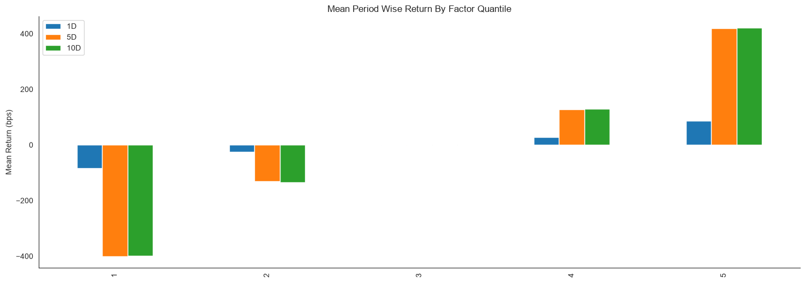
By looking at the mean return by quantile we can get a real look at how well the factor differentiates forward returns across the signal values. Obviously we want securities with a better signal to exhibit higher returns. For a good factor we’d expect to see negative values in the lower quartiles and positive values in the upper quantiles.
[22]:
alphalens.plotting.plot_quantile_returns_violin(mean_return_by_q_daily)
sns.despine()
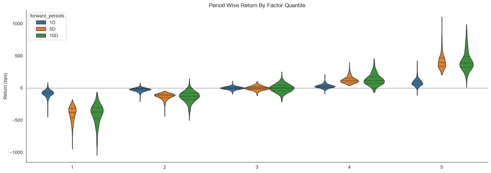
This violin plot is similar to the one before it but shows more information about the underlying data. It gives a better idea about the range of values, the median, and the inter-quartile range. What gives the plots their shape is the application of a probability density of the data at different values.
[23]:
quant_return_spread, std_err_spread = alphalens.performance.compute_mean_returns_spread(mean_return_by_q_daily,
upper_quant=5,
lower_quant=1,
std_err=std_err)
[24]:
alphalens.plotting.plot_mean_quantile_returns_spread_time_series(
quant_return_spread, std_err_spread);
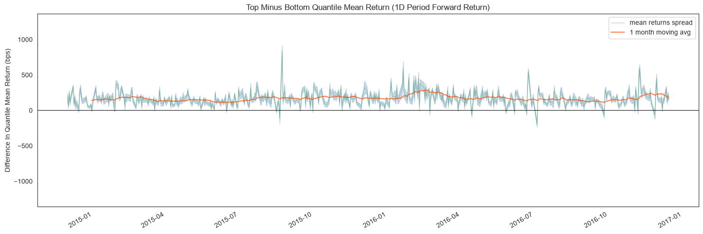
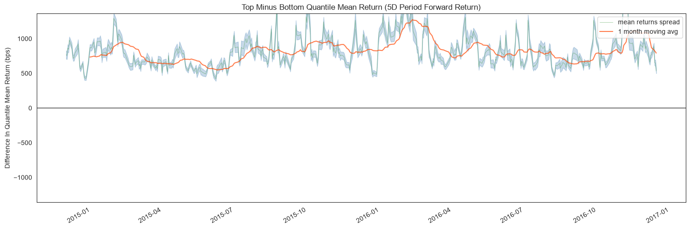
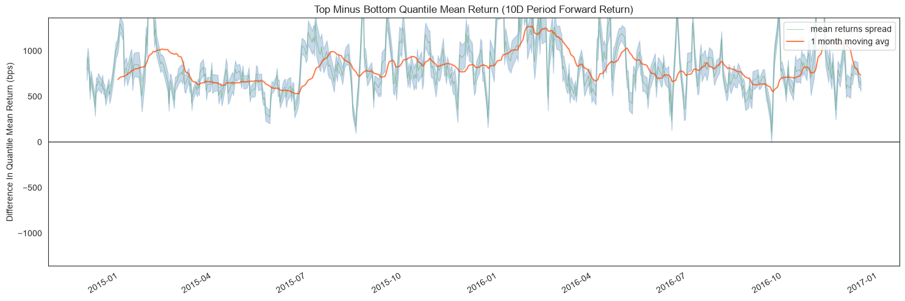
This rolling forward returns spread graph allows us to look at the raw spread in basis points between the top and bottom quantiles over time. The green line is the returns spread while the orange line is a 1 month average to smooth the data and make it easier to visualize.
[25]:
alphalens.plotting.plot_cumulative_returns_by_quantile(
mean_return_by_q_daily, period='1D');
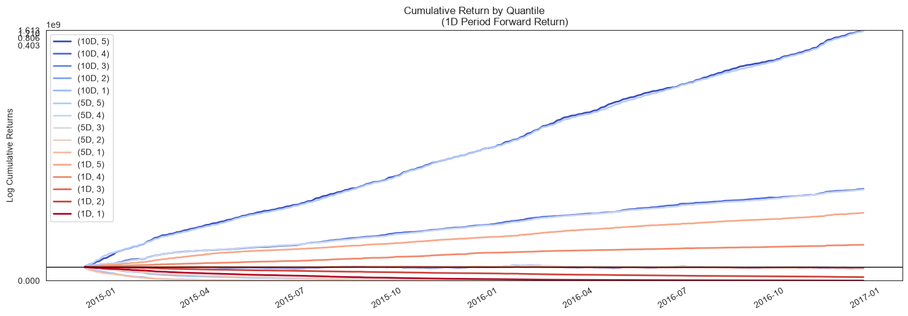
By looking at the cumulative returns by factor quantile we can get an intuition for which quantiles are contributing the most to the factor and at what time. Ideally we would like to see a these curves originate at the same value on the left and spread out like a fan as they move to the right through time, with the higher quantiles on the top.
[26]:
ls_factor_returns = alphalens.performance.factor_returns(factor_data)
[27]:
ls_factor_returns.head()
[27]:
| 1D | 5D | 10D | |
|---|---|---|---|
| date | |||
| 2014-12-01 00:00:00+00:00 | 0.010095 | 0.042378 | 0.043478 |
| 2014-12-02 00:00:00+00:00 | 0.002433 | 0.040279 | 0.047952 |
| 2014-12-03 00:00:00+00:00 | 0.012216 | 0.044439 | 0.043069 |
| 2014-12-04 00:00:00+00:00 | 0.005312 | 0.040288 | 0.029769 |
| 2014-12-05 00:00:00+00:00 | 0.009219 | 0.045490 | 0.031628 |
[28]:
alphalens.plotting.plot_cumulative_returns(
ls_factor_returns['1D'], period='1D');
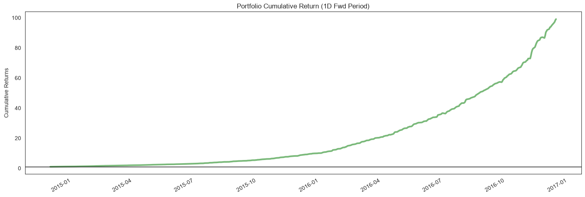
While looking at quantiles is important we must also look at the factor returns as a whole. The cumulative factor long/short returns plot lets us view the combined effects overtime of our entire factor.
[29]:
alpha_beta = alphalens.performance.factor_alpha_beta(factor_data)
[30]:
alpha_beta
[30]:
| 1D | 5D | 10D | |
|---|---|---|---|
| Ann. alpha | 8.376747 | 7.761415 | 1.947459 |
| beta | 0.089623 | 0.072285 | 0.054361 |
A very important part of factor returns analysis is determing the alpha, and how significant it is. Here we surface the annualized alpha, and beta.
Returns Tear Sheet#
We can view all returns analysis calculations together.
[31]:
alphalens.tears.create_returns_tear_sheet(factor_data)
Returns Analysis
| 1D | 5D | 10D | |
|---|---|---|---|
| Ann. alpha | 8.377 | 7.761 | 1.947 |
| beta | 0.090 | 0.072 | 0.054 |
| Mean Period Wise Return Top Quantile (bps) | 85.583 | 82.430 | 41.282 |
| Mean Period Wise Return Bottom Quantile (bps) | -83.719 | -81.575 | -40.679 |
| Mean Period Wise Spread (bps) | 169.303 | 164.012 | 81.977 |
<Figure size 640x480 with 0 Axes>

Information Analysis#
Information Analysis is a way for us to evaluate the predicitive value of a factor without the confounding effects of transaction costs. The main way we look at this is through the Information Coefficient (IC).
From Wikipedia…
The information coefficient (IC) is a measure of the merit of a predicted value. In finance, the information coefficient is used as a performance metric for the predictive skill of a financial analyst. The information coefficient is similar to correlation in that it can be seen to measure the linear relationship between two random variables, e.g. predicted stock returns and the actualized returns. The information coefficient ranges from 0 to 1, with 0 denoting no linear relationship between predictions and actual values (poor forecasting skills) and 1 denoting a perfect linear relationship (good forecasting skills).
Performance Metrics & Plotting Functions#
[32]:
ic = alphalens.performance.factor_information_coefficient(factor_data)
[33]:
ic.head()
[33]:
| 1D | 5D | 10D | |
|---|---|---|---|
| date | |||
| 2014-12-01 00:00:00+00:00 | 0.358091 | 1.0 | 0.565748 |
| 2014-12-02 00:00:00+00:00 | 0.216312 | 1.0 | 0.725988 |
| 2014-12-03 00:00:00+00:00 | 0.495497 | 1.0 | 0.728264 |
| 2014-12-04 00:00:00+00:00 | 0.341652 | 1.0 | 0.646853 |
| 2014-12-05 00:00:00+00:00 | 0.480195 | 1.0 | 0.756556 |
[34]:
alphalens.plotting.plot_ic_ts(ic);
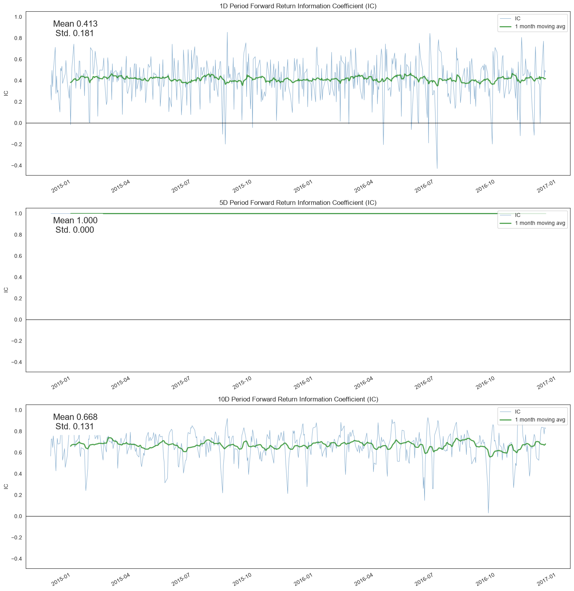
By looking at the IC each day we can understand how theoretically predicitive our factor is overtime. We like our mean IC to be high and the standard deviation, or volatility of it, to be low. We want to find consistently predictive factors.
[35]:
alphalens.plotting.plot_ic_hist(ic);
---------------------------------------------------------------------------
ValueError Traceback (most recent call last)
Cell In[35], line 1
----> 1 alphalens.plotting.plot_ic_hist(ic);
File ~\AppData\Local\Programs\Python\Python313\Lib\site-packages\alphalens\plotting.py:297, in plot_ic_hist(ic, ax)
294 ax = ax.flatten()
296 for a, (period_num, ic) in zip(ax, ic.items()):
--> 297 sns.histplot(ic.replace(np.nan, 0.0), kde=True, ax=a)
298 a.set(title="%s Period IC" % period_num, xlabel="IC")
299 a.set_xlim([-1, 1])
File ~\AppData\Local\Programs\Python\Python313\Lib\site-packages\seaborn\distributions.py:1416, in histplot(data, x, y, hue, weights, stat, bins, binwidth, binrange, discrete, cumulative, common_bins, common_norm, multiple, element, fill, shrink, kde, kde_kws, line_kws, thresh, pthresh, pmax, cbar, cbar_ax, cbar_kws, palette, hue_order, hue_norm, color, log_scale, legend, ax, **kwargs)
1405 estimate_kws = dict(
1406 stat=stat,
1407 bins=bins,
(...) 1411 cumulative=cumulative,
1412 )
1414 if p.univariate:
-> 1416 p.plot_univariate_histogram(
1417 multiple=multiple,
1418 element=element,
1419 fill=fill,
1420 shrink=shrink,
1421 common_norm=common_norm,
1422 common_bins=common_bins,
1423 kde=kde,
1424 kde_kws=kde_kws,
1425 color=color,
1426 legend=legend,
1427 estimate_kws=estimate_kws,
1428 line_kws=line_kws,
1429 **kwargs,
1430 )
1432 else:
1434 p.plot_bivariate_histogram(
1435 common_bins=common_bins,
1436 common_norm=common_norm,
(...) 1446 **kwargs,
1447 )
File ~\AppData\Local\Programs\Python\Python313\Lib\site-packages\seaborn\distributions.py:470, in _DistributionPlotter.plot_univariate_histogram(self, multiple, element, fill, common_norm, common_bins, shrink, kde, kde_kws, color, legend, line_kws, estimate_kws, **plot_kws)
468 # Do the histogram computation
469 if not (multiple_histograms and common_bins):
--> 470 bin_kws = estimator._define_bin_params(sub_data, orient, None)
471 res = estimator._normalize(estimator._eval(sub_data, orient, bin_kws))
472 heights = res[estimator.stat].to_numpy()
File ~\AppData\Local\Programs\Python\Python313\Lib\site-packages\seaborn\_stats\counting.py:152, in Hist._define_bin_params(self, data, orient, scale_type)
148 # TODO We'll want this for ordinal / discrete scales too
149 # (Do we need discrete as a parameter or just infer from scale?)
150 discrete = self.discrete or scale_type == "nominal"
--> 152 bin_edges = self._define_bin_edges(
153 vals, weights, self.bins, self.binwidth, self.binrange, discrete,
154 )
156 if isinstance(self.bins, (str, int)):
157 n_bins = len(bin_edges) - 1
File ~\AppData\Local\Programs\Python\Python313\Lib\site-packages\seaborn\_stats\counting.py:137, in Hist._define_bin_edges(self, vals, weight, bins, binwidth, binrange, discrete)
135 if binwidth is not None:
136 bins = int(round((stop - start) / binwidth))
--> 137 bin_edges = np.histogram_bin_edges(vals, bins, binrange, weight)
139 # TODO warning or cap on too many bins?
141 return bin_edges
File ~\AppData\Local\Programs\Python\Python313\Lib\site-packages\numpy\lib\_histograms_impl.py:676, in histogram_bin_edges(a, bins, range, weights)
475 r"""
476 Function to calculate only the edges of the bins used by the `histogram`
477 function.
(...) 673
674 """
675 a, weights = _ravel_and_check_weights(a, weights)
--> 676 bin_edges, _ = _get_bin_edges(a, bins, range, weights)
677 return bin_edges
File ~\AppData\Local\Programs\Python\Python313\Lib\site-packages\numpy\lib\_histograms_impl.py:449, in _get_bin_edges(a, bins, range, weights)
445 bin_edges = np.linspace(
446 first_edge, last_edge, n_equal_bins + 1,
447 endpoint=True, dtype=bin_type)
448 if np.any(bin_edges[:-1] >= bin_edges[1:]):
--> 449 raise ValueError(
450 f'Too many bins for data range. Cannot create {n_equal_bins} '
451 f'finite-sized bins.')
452 return bin_edges, (first_edge, last_edge, n_equal_bins)
453 else:
ValueError: Too many bins for data range. Cannot create 46 finite-sized bins.
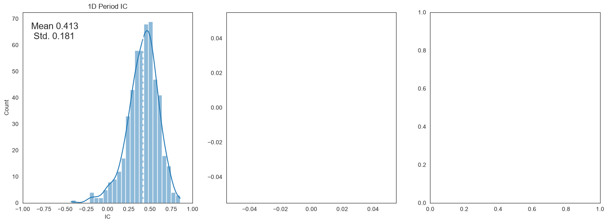
Looking at a histogram of the daily IC values can indicate how the factor behaves most of the time, where the likely IC values will fall, it also allows us to see if the factor has fat tails.
[36]:
alphalens.plotting.plot_ic_qq(ic);
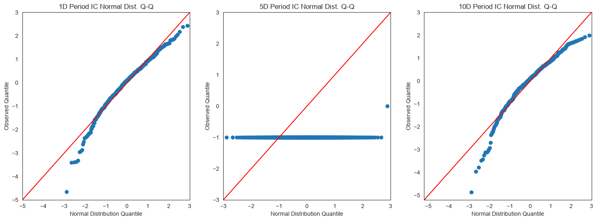
These Q-Q plots show the difference in shape between the distribution of IC values and a normal distribution. This is especially helpful in seeing how the most extreme values in the distribution affect the predicitive power.
[37]:
mean_monthly_ic = alphalens.performance.mean_information_coefficient(
factor_data, by_time='M')
[38]:
mean_monthly_ic.head()
[38]:
| 1D | 5D | 10D | |
|---|---|---|---|
| date | |||
| 2014-12-31 00:00:00+00:00 | 0.381081 | 1.0 | 0.659461 |
| 2015-01-31 00:00:00+00:00 | 0.424278 | 1.0 | 0.660761 |
| 2015-02-28 00:00:00+00:00 | 0.461436 | 1.0 | 0.727950 |
| 2015-03-31 00:00:00+00:00 | 0.424064 | 1.0 | 0.680696 |
| 2015-04-30 00:00:00+00:00 | 0.420418 | 1.0 | 0.639594 |
[39]:
alphalens.plotting.plot_monthly_ic_heatmap(mean_monthly_ic);
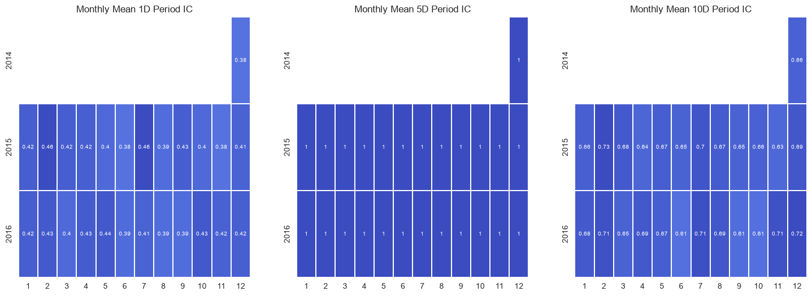
By displaying the IC data in heatmap format we can get an idea about the consistency of the factor, and how it behaves during different market regimes/seasons.
Information Tear Sheet#
We can view all information analysis calculations together.
[40]:
alphalens.tears.create_information_tear_sheet(factor_data);
Information Analysis
| 1D | 5D | 10D | |
|---|---|---|---|
| IC Mean | 0.413 | 1.000000e+00 | 0.668 |
| IC Std. | 0.181 | 0.000000e+00 | 0.131 |
| Risk-Adjusted IC | 2.278 | 9.007199e+15 | 5.084 |
| t-stat(IC) | 51.736 | 2.046042e+17 | 115.491 |
| p-value(IC) | 0.000 | 0.000000e+00 | 0.000 |
| IC Skew | -0.748 | NaN | -1.074 |
| IC Kurtosis | 1.358 | NaN | 2.253 |
---------------------------------------------------------------------------
ValueError Traceback (most recent call last)
Cell In[40], line 1
----> 1 alphalens.tears.create_information_tear_sheet(factor_data);
File ~\AppData\Local\Programs\Python\Python313\Lib\site-packages\alphalens\plotting.py:46, in customize.<locals>.call_w_context(*args, **kwargs)
44 with plotting_context(), axes_style(), color_palette:
45 sns.despine(left=True)
---> 46 return func(*args, **kwargs)
47 else:
48 return func(*args, **kwargs)
File ~\AppData\Local\Programs\Python\Python313\Lib\site-packages\alphalens\tears.py:365, in create_information_tear_sheet(factor_data, group_neutral, by_group)
362 plotting.plot_ic_ts(ic, ax=ax_ic_ts)
364 ax_ic_hqq = [gf.next_cell() for _ in range(fr_cols * 2)]
--> 365 plotting.plot_ic_hist(ic, ax=ax_ic_hqq[::2])
366 plotting.plot_ic_qq(ic, ax=ax_ic_hqq[1::2])
368 if not by_group:
File ~\AppData\Local\Programs\Python\Python313\Lib\site-packages\alphalens\plotting.py:297, in plot_ic_hist(ic, ax)
294 ax = ax.flatten()
296 for a, (period_num, ic) in zip(ax, ic.items()):
--> 297 sns.histplot(ic.replace(np.nan, 0.0), kde=True, ax=a)
298 a.set(title="%s Period IC" % period_num, xlabel="IC")
299 a.set_xlim([-1, 1])
File ~\AppData\Local\Programs\Python\Python313\Lib\site-packages\seaborn\distributions.py:1416, in histplot(data, x, y, hue, weights, stat, bins, binwidth, binrange, discrete, cumulative, common_bins, common_norm, multiple, element, fill, shrink, kde, kde_kws, line_kws, thresh, pthresh, pmax, cbar, cbar_ax, cbar_kws, palette, hue_order, hue_norm, color, log_scale, legend, ax, **kwargs)
1405 estimate_kws = dict(
1406 stat=stat,
1407 bins=bins,
(...) 1411 cumulative=cumulative,
1412 )
1414 if p.univariate:
-> 1416 p.plot_univariate_histogram(
1417 multiple=multiple,
1418 element=element,
1419 fill=fill,
1420 shrink=shrink,
1421 common_norm=common_norm,
1422 common_bins=common_bins,
1423 kde=kde,
1424 kde_kws=kde_kws,
1425 color=color,
1426 legend=legend,
1427 estimate_kws=estimate_kws,
1428 line_kws=line_kws,
1429 **kwargs,
1430 )
1432 else:
1434 p.plot_bivariate_histogram(
1435 common_bins=common_bins,
1436 common_norm=common_norm,
(...) 1446 **kwargs,
1447 )
File ~\AppData\Local\Programs\Python\Python313\Lib\site-packages\seaborn\distributions.py:470, in _DistributionPlotter.plot_univariate_histogram(self, multiple, element, fill, common_norm, common_bins, shrink, kde, kde_kws, color, legend, line_kws, estimate_kws, **plot_kws)
468 # Do the histogram computation
469 if not (multiple_histograms and common_bins):
--> 470 bin_kws = estimator._define_bin_params(sub_data, orient, None)
471 res = estimator._normalize(estimator._eval(sub_data, orient, bin_kws))
472 heights = res[estimator.stat].to_numpy()
File ~\AppData\Local\Programs\Python\Python313\Lib\site-packages\seaborn\_stats\counting.py:152, in Hist._define_bin_params(self, data, orient, scale_type)
148 # TODO We'll want this for ordinal / discrete scales too
149 # (Do we need discrete as a parameter or just infer from scale?)
150 discrete = self.discrete or scale_type == "nominal"
--> 152 bin_edges = self._define_bin_edges(
153 vals, weights, self.bins, self.binwidth, self.binrange, discrete,
154 )
156 if isinstance(self.bins, (str, int)):
157 n_bins = len(bin_edges) - 1
File ~\AppData\Local\Programs\Python\Python313\Lib\site-packages\seaborn\_stats\counting.py:137, in Hist._define_bin_edges(self, vals, weight, bins, binwidth, binrange, discrete)
135 if binwidth is not None:
136 bins = int(round((stop - start) / binwidth))
--> 137 bin_edges = np.histogram_bin_edges(vals, bins, binrange, weight)
139 # TODO warning or cap on too many bins?
141 return bin_edges
File ~\AppData\Local\Programs\Python\Python313\Lib\site-packages\numpy\lib\_histograms_impl.py:676, in histogram_bin_edges(a, bins, range, weights)
475 r"""
476 Function to calculate only the edges of the bins used by the `histogram`
477 function.
(...) 673
674 """
675 a, weights = _ravel_and_check_weights(a, weights)
--> 676 bin_edges, _ = _get_bin_edges(a, bins, range, weights)
677 return bin_edges
File ~\AppData\Local\Programs\Python\Python313\Lib\site-packages\numpy\lib\_histograms_impl.py:449, in _get_bin_edges(a, bins, range, weights)
445 bin_edges = np.linspace(
446 first_edge, last_edge, n_equal_bins + 1,
447 endpoint=True, dtype=bin_type)
448 if np.any(bin_edges[:-1] >= bin_edges[1:]):
--> 449 raise ValueError(
450 f'Too many bins for data range. Cannot create {n_equal_bins} '
451 f'finite-sized bins.')
452 return bin_edges, (first_edge, last_edge, n_equal_bins)
453 else:
ValueError: Too many bins for data range. Cannot create 46 finite-sized bins.
<Figure size 640x480 with 0 Axes>
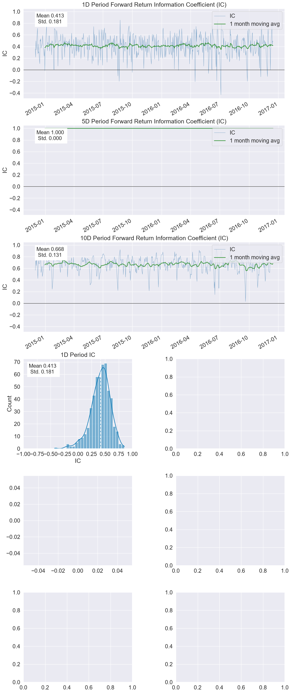
Turnover Analysis#
Turnover Analysis gives us an idea about the nature of a factor’s makeup and how it changes.
Performance Metrics & Plotting Functions#
[41]:
quantile_factor = factor_data['factor_quantile']
turnover_period = 1
[42]:
quantile_turnover = pd.concat([alphalens.performance.quantile_turnover(quantile_factor, q, turnover_period)
for q in range(1, int(quantile_factor.max()) + 1)], axis=1)
[43]:
quantile_turnover.head()
[43]:
| 1 | 2 | 3 | 4 | 5 | |
|---|---|---|---|---|---|
| date | |||||
| 2014-12-01 00:00:00+00:00 | NaN | NaN | NaN | NaN | NaN |
| 2014-12-02 00:00:00+00:00 | 0.322581 | 0.633333 | 0.700000 | 0.533333 | 0.433333 |
| 2014-12-03 00:00:00+00:00 | 0.161290 | 0.366667 | 0.566667 | 0.533333 | 0.400000 |
| 2014-12-04 00:00:00+00:00 | 0.193548 | 0.566667 | 0.700000 | 0.766667 | 0.433333 |
| 2014-12-05 00:00:00+00:00 | 0.129032 | 0.366667 | 0.633333 | 0.633333 | 0.600000 |
[44]:
alphalens.plotting.plot_top_bottom_quantile_turnover(
quantile_turnover, turnover_period);
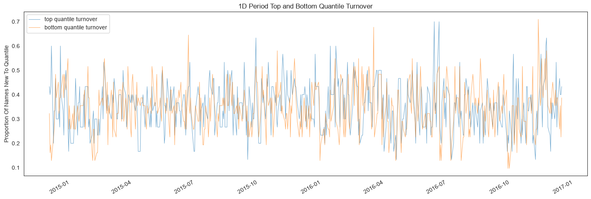
Factor turnover is important as it indicates the incorporation of new information and the make up of the extremes of a signal. By looking at the new additions to the sets of top and bottom quantiles we can see how much of this factor is getting remade everyday.
[45]:
factor_autocorrelation = alphalens.performance.factor_rank_autocorrelation(
factor_data, turnover_period)
[46]:
factor_autocorrelation.head()
[46]:
date
2014-12-01 00:00:00+00:00 NaN
2014-12-02 00:00:00+00:00 0.716066
2014-12-03 00:00:00+00:00 0.864155
2014-12-04 00:00:00+00:00 0.737354
2014-12-05 00:00:00+00:00 0.795594
Freq: C, Name: 1, dtype: float64
[47]:
alphalens.plotting.plot_factor_rank_auto_correlation(factor_autocorrelation);
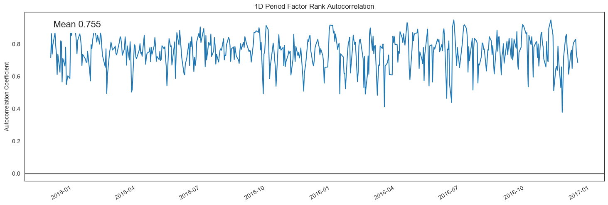
The autocorrelation of the factor indicates to us the persistence of the signal itself.
Turnover Tear Sheet#
We can view all turnover calculations together.
[48]:
alphalens.tears.create_turnover_tear_sheet(factor_data);
Turnover Analysis
| 1D | 5D | 10D | |
|---|---|---|---|
| Quantile 1 Mean Turnover | 0.343 | 0.768 | 0.782 |
| Quantile 2 Mean Turnover | 0.600 | 0.788 | 0.795 |
| Quantile 3 Mean Turnover | 0.642 | 0.784 | 0.786 |
| Quantile 4 Mean Turnover | 0.605 | 0.790 | 0.796 |
| Quantile 5 Mean Turnover | 0.351 | 0.787 | 0.796 |
| 1D | 5D | 10D | |
|---|---|---|---|
| Mean Factor Rank Autocorrelation | 0.755 | -0.002 | -0.032 |
<Figure size 640x480 with 0 Axes>
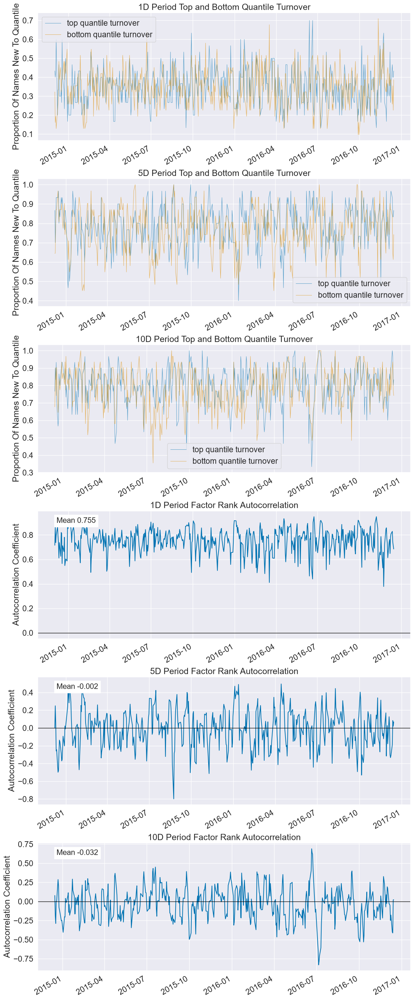
Event Style Returns Analysis#
Looking at the average cumulative return in a window before and after a factor can indicate to us how long the predicative power of a factor lasts. This tear sheet takes a while to run.
NOTE: This tear sheet takes in an extra argument pricing.
[49]:
alphalens.tears.create_event_returns_tear_sheet(
factor_data, pricing, by_group=True);
<Figure size 640x480 with 0 Axes>
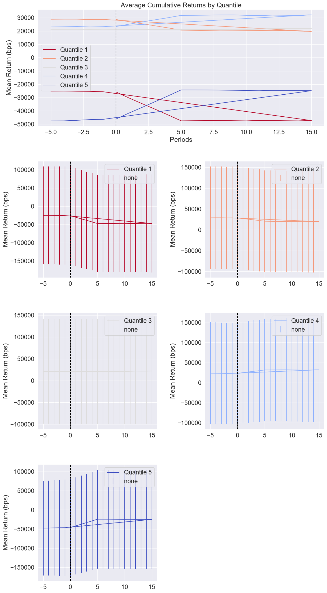
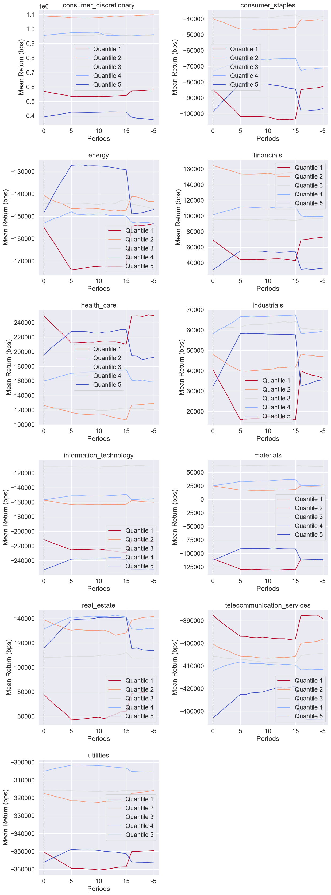
Groupwise Performance#
Many of the plots in Alphalens can be viewed on their own by grouping if grouping information is provided. The returns and information tear sheets can be viewed groupwise by passing in the by_group=True argument.
[50]:
ic_by_sector = alphalens.performance.mean_information_coefficient(
factor_data, by_group=True)
[51]:
ic_by_sector.head()
[51]:
| 1D | 5D | 10D | |
|---|---|---|---|
| group | |||
| consumer_discretionary | 0.375000 | 1.0 | 0.628553 |
| consumer_staples | 0.387585 | 1.0 | 0.647361 |
| energy | 0.370296 | 1.0 | 0.623397 |
| financials | 0.404464 | 1.0 | 0.641848 |
| health_care | 0.381757 | 1.0 | 0.620663 |
[52]:
alphalens.plotting.plot_ic_by_group(ic_by_sector)
[52]:
<Axes: title={'center': 'Information Coefficient By Group'}>
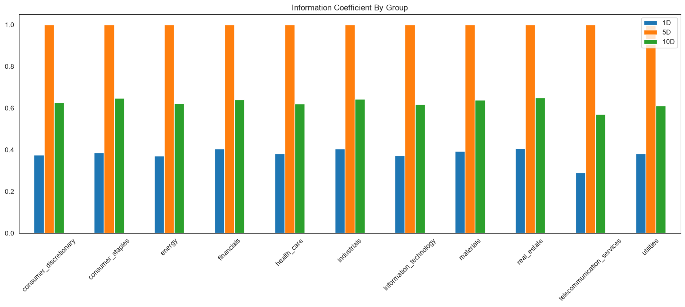
[53]:
mean_return_quantile_sector, mean_return_quantile_sector_err = alphalens.performance.mean_return_by_quantile(
factor_data, by_group=True)
[54]:
mean_return_quantile_sector.head()
[54]:
| 1D | 5D | 10D | ||
|---|---|---|---|---|
| factor_quantile | group | |||
| 1 | consumer_discretionary | -0.008225 | -0.041518 | -0.041631 |
| consumer_staples | -0.007299 | -0.034789 | -0.036436 | |
| energy | -0.008872 | -0.043753 | -0.041280 | |
| financials | -0.007737 | -0.038162 | -0.038934 | |
| health_care | -0.007773 | -0.039926 | -0.036943 |
[55]:
alphalens.plotting.plot_quantile_returns_bar(
mean_return_quantile_sector, by_group=True)
[55]:
array([<Axes: title={'center': 'consumer_discretionary'}, ylabel='Mean Return (bps)'>,
<Axes: title={'center': 'consumer_staples'}, ylabel='Mean Return (bps)'>,
<Axes: title={'center': 'energy'}, ylabel='Mean Return (bps)'>,
<Axes: title={'center': 'financials'}, ylabel='Mean Return (bps)'>,
<Axes: title={'center': 'health_care'}, ylabel='Mean Return (bps)'>,
<Axes: title={'center': 'industrials'}, ylabel='Mean Return (bps)'>,
<Axes: title={'center': 'information_technology'}, ylabel='Mean Return (bps)'>,
<Axes: title={'center': 'materials'}, ylabel='Mean Return (bps)'>,
<Axes: title={'center': 'real_estate'}, ylabel='Mean Return (bps)'>,
<Axes: title={'center': 'telecommunication_services'}, ylabel='Mean Return (bps)'>,
<Axes: title={'center': 'utilities'}, ylabel='Mean Return (bps)'>,
<Axes: >], dtype=object)
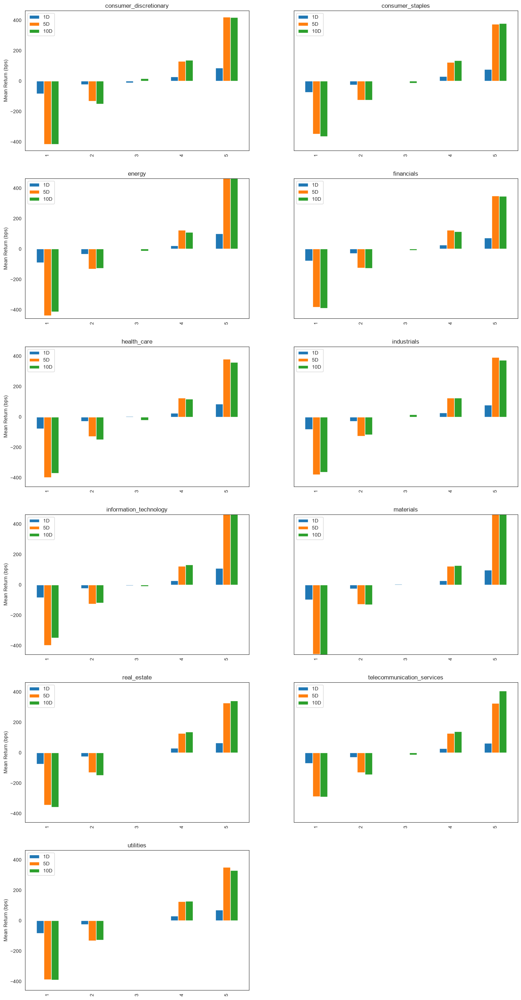
Summary Tear Sheet#
There are a lot of plots above. If you want a quick snapshot of how the alpha factor performs consider the summary tear sheet.
[56]:
alphalens.tears.create_summary_tear_sheet(factor_data)
Quantiles Statistics
| min | max | mean | std | count | count % | |
|---|---|---|---|---|---|---|
| factor_quantile | ||||||
| 1 | -0.362876 | 0.034679 | -0.037899 | 0.032273 | 15995 | 20.528781 |
| 2 | -0.127435 | 0.047916 | -0.010813 | 0.019276 | 15480 | 19.867805 |
| 3 | -0.106986 | 0.067386 | 0.002090 | 0.018054 | 15480 | 19.867805 |
| 4 | -0.083241 | 0.098542 | 0.014972 | 0.019012 | 15480 | 19.867805 |
| 5 | -0.061205 | 0.494950 | 0.044129 | 0.036580 | 15480 | 19.867805 |
Returns Analysis
| 1D | 5D | 10D | |
|---|---|---|---|
| Ann. alpha | 8.377 | 7.761 | 1.947 |
| beta | 0.090 | 0.072 | 0.054 |
| Mean Period Wise Return Top Quantile (bps) | 85.583 | 82.430 | 41.282 |
| Mean Period Wise Return Bottom Quantile (bps) | -83.719 | -81.575 | -40.679 |
| Mean Period Wise Spread (bps) | 169.303 | 164.012 | 81.977 |
Information Analysis
| 1D | 5D | 10D | |
|---|---|---|---|
| IC Mean | 0.413 | 1.000000e+00 | 0.668 |
| IC Std. | 0.181 | 0.000000e+00 | 0.131 |
| Risk-Adjusted IC | 2.278 | 9.007199e+15 | 5.084 |
| t-stat(IC) | 51.736 | 2.046042e+17 | 115.491 |
| p-value(IC) | 0.000 | 0.000000e+00 | 0.000 |
| IC Skew | -0.748 | NaN | -1.074 |
| IC Kurtosis | 1.358 | NaN | 2.253 |
Turnover Analysis
| 1D | 5D | 10D | |
|---|---|---|---|
| Quantile 1 Mean Turnover | 0.343 | 0.768 | 0.782 |
| Quantile 2 Mean Turnover | 0.600 | 0.788 | 0.795 |
| Quantile 3 Mean Turnover | 0.642 | 0.784 | 0.786 |
| Quantile 4 Mean Turnover | 0.605 | 0.790 | 0.796 |
| Quantile 5 Mean Turnover | 0.351 | 0.787 | 0.796 |
| 1D | 5D | 10D | |
|---|---|---|---|
| Mean Factor Rank Autocorrelation | 0.755 | -0.002 | -0.032 |
<Figure size 640x480 with 0 Axes>
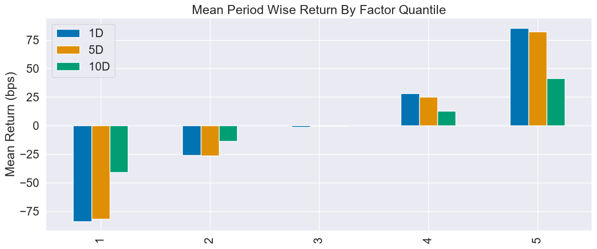
The Whole Thing#
If you want to see all of the results create a full tear sheet. By passing in the factor data you can analyze all of the above statistics and plots at once.
[57]:
alphalens.tears.create_full_tear_sheet(factor_data)
Quantiles Statistics
| min | max | mean | std | count | count % | |
|---|---|---|---|---|---|---|
| factor_quantile | ||||||
| 1 | -0.362876 | 0.034679 | -0.037899 | 0.032273 | 15995 | 20.528781 |
| 2 | -0.127435 | 0.047916 | -0.010813 | 0.019276 | 15480 | 19.867805 |
| 3 | -0.106986 | 0.067386 | 0.002090 | 0.018054 | 15480 | 19.867805 |
| 4 | -0.083241 | 0.098542 | 0.014972 | 0.019012 | 15480 | 19.867805 |
| 5 | -0.061205 | 0.494950 | 0.044129 | 0.036580 | 15480 | 19.867805 |
Returns Analysis
| 1D | 5D | 10D | |
|---|---|---|---|
| Ann. alpha | 8.377 | 7.761 | 1.947 |
| beta | 0.090 | 0.072 | 0.054 |
| Mean Period Wise Return Top Quantile (bps) | 85.583 | 82.430 | 41.282 |
| Mean Period Wise Return Bottom Quantile (bps) | -83.719 | -81.575 | -40.679 |
| Mean Period Wise Spread (bps) | 169.303 | 164.012 | 81.977 |
<Figure size 640x480 with 0 Axes>
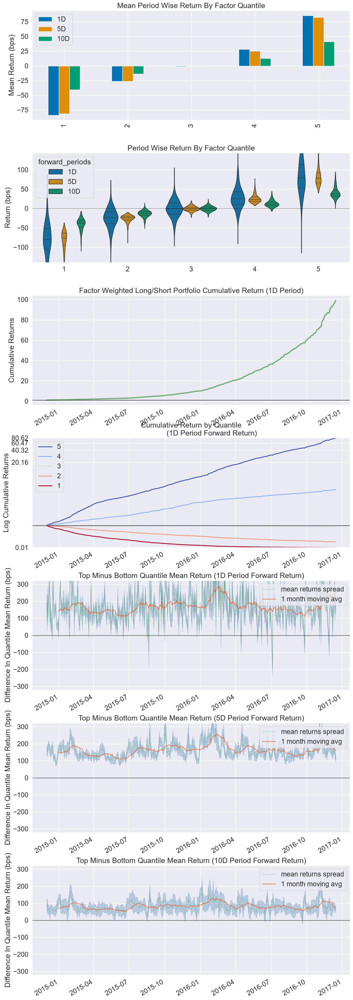
Information Analysis
| 1D | 5D | 10D | |
|---|---|---|---|
| IC Mean | 0.413 | 1.000000e+00 | 0.668 |
| IC Std. | 0.181 | 0.000000e+00 | 0.131 |
| Risk-Adjusted IC | 2.278 | 9.007199e+15 | 5.084 |
| t-stat(IC) | 51.736 | 2.046042e+17 | 115.491 |
| p-value(IC) | 0.000 | 0.000000e+00 | 0.000 |
| IC Skew | -0.748 | NaN | -1.074 |
| IC Kurtosis | 1.358 | NaN | 2.253 |
---------------------------------------------------------------------------
ValueError Traceback (most recent call last)
Cell In[57], line 1
----> 1 alphalens.tears.create_full_tear_sheet(factor_data)
File ~\AppData\Local\Programs\Python\Python313\Lib\site-packages\alphalens\plotting.py:46, in customize.<locals>.call_w_context(*args, **kwargs)
44 with plotting_context(), axes_style(), color_palette:
45 sns.despine(left=True)
---> 46 return func(*args, **kwargs)
47 else:
48 return func(*args, **kwargs)
File ~\AppData\Local\Programs\Python\Python313\Lib\site-packages\alphalens\tears.py:501, in create_full_tear_sheet(factor_data, long_short, group_neutral, by_group)
497 plotting.plot_quantile_statistics_table(factor_data)
498 create_returns_tear_sheet(
499 factor_data, long_short, group_neutral, by_group, set_context=False
500 )
--> 501 create_information_tear_sheet(
502 factor_data, group_neutral, by_group, set_context=False
503 )
504 create_turnover_tear_sheet(factor_data, set_context=False)
File ~\AppData\Local\Programs\Python\Python313\Lib\site-packages\alphalens\plotting.py:48, in customize.<locals>.call_w_context(*args, **kwargs)
46 return func(*args, **kwargs)
47 else:
---> 48 return func(*args, **kwargs)
File ~\AppData\Local\Programs\Python\Python313\Lib\site-packages\alphalens\tears.py:365, in create_information_tear_sheet(factor_data, group_neutral, by_group)
362 plotting.plot_ic_ts(ic, ax=ax_ic_ts)
364 ax_ic_hqq = [gf.next_cell() for _ in range(fr_cols * 2)]
--> 365 plotting.plot_ic_hist(ic, ax=ax_ic_hqq[::2])
366 plotting.plot_ic_qq(ic, ax=ax_ic_hqq[1::2])
368 if not by_group:
File ~\AppData\Local\Programs\Python\Python313\Lib\site-packages\alphalens\plotting.py:297, in plot_ic_hist(ic, ax)
294 ax = ax.flatten()
296 for a, (period_num, ic) in zip(ax, ic.items()):
--> 297 sns.histplot(ic.replace(np.nan, 0.0), kde=True, ax=a)
298 a.set(title="%s Period IC" % period_num, xlabel="IC")
299 a.set_xlim([-1, 1])
File ~\AppData\Local\Programs\Python\Python313\Lib\site-packages\seaborn\distributions.py:1416, in histplot(data, x, y, hue, weights, stat, bins, binwidth, binrange, discrete, cumulative, common_bins, common_norm, multiple, element, fill, shrink, kde, kde_kws, line_kws, thresh, pthresh, pmax, cbar, cbar_ax, cbar_kws, palette, hue_order, hue_norm, color, log_scale, legend, ax, **kwargs)
1405 estimate_kws = dict(
1406 stat=stat,
1407 bins=bins,
(...) 1411 cumulative=cumulative,
1412 )
1414 if p.univariate:
-> 1416 p.plot_univariate_histogram(
1417 multiple=multiple,
1418 element=element,
1419 fill=fill,
1420 shrink=shrink,
1421 common_norm=common_norm,
1422 common_bins=common_bins,
1423 kde=kde,
1424 kde_kws=kde_kws,
1425 color=color,
1426 legend=legend,
1427 estimate_kws=estimate_kws,
1428 line_kws=line_kws,
1429 **kwargs,
1430 )
1432 else:
1434 p.plot_bivariate_histogram(
1435 common_bins=common_bins,
1436 common_norm=common_norm,
(...) 1446 **kwargs,
1447 )
File ~\AppData\Local\Programs\Python\Python313\Lib\site-packages\seaborn\distributions.py:470, in _DistributionPlotter.plot_univariate_histogram(self, multiple, element, fill, common_norm, common_bins, shrink, kde, kde_kws, color, legend, line_kws, estimate_kws, **plot_kws)
468 # Do the histogram computation
469 if not (multiple_histograms and common_bins):
--> 470 bin_kws = estimator._define_bin_params(sub_data, orient, None)
471 res = estimator._normalize(estimator._eval(sub_data, orient, bin_kws))
472 heights = res[estimator.stat].to_numpy()
File ~\AppData\Local\Programs\Python\Python313\Lib\site-packages\seaborn\_stats\counting.py:152, in Hist._define_bin_params(self, data, orient, scale_type)
148 # TODO We'll want this for ordinal / discrete scales too
149 # (Do we need discrete as a parameter or just infer from scale?)
150 discrete = self.discrete or scale_type == "nominal"
--> 152 bin_edges = self._define_bin_edges(
153 vals, weights, self.bins, self.binwidth, self.binrange, discrete,
154 )
156 if isinstance(self.bins, (str, int)):
157 n_bins = len(bin_edges) - 1
File ~\AppData\Local\Programs\Python\Python313\Lib\site-packages\seaborn\_stats\counting.py:137, in Hist._define_bin_edges(self, vals, weight, bins, binwidth, binrange, discrete)
135 if binwidth is not None:
136 bins = int(round((stop - start) / binwidth))
--> 137 bin_edges = np.histogram_bin_edges(vals, bins, binrange, weight)
139 # TODO warning or cap on too many bins?
141 return bin_edges
File ~\AppData\Local\Programs\Python\Python313\Lib\site-packages\numpy\lib\_histograms_impl.py:676, in histogram_bin_edges(a, bins, range, weights)
475 r"""
476 Function to calculate only the edges of the bins used by the `histogram`
477 function.
(...) 673
674 """
675 a, weights = _ravel_and_check_weights(a, weights)
--> 676 bin_edges, _ = _get_bin_edges(a, bins, range, weights)
677 return bin_edges
File ~\AppData\Local\Programs\Python\Python313\Lib\site-packages\numpy\lib\_histograms_impl.py:449, in _get_bin_edges(a, bins, range, weights)
445 bin_edges = np.linspace(
446 first_edge, last_edge, n_equal_bins + 1,
447 endpoint=True, dtype=bin_type)
448 if np.any(bin_edges[:-1] >= bin_edges[1:]):
--> 449 raise ValueError(
450 f'Too many bins for data range. Cannot create {n_equal_bins} '
451 f'finite-sized bins.')
452 return bin_edges, (first_edge, last_edge, n_equal_bins)
453 else:
ValueError: Too many bins for data range. Cannot create 46 finite-sized bins.

[ ]: